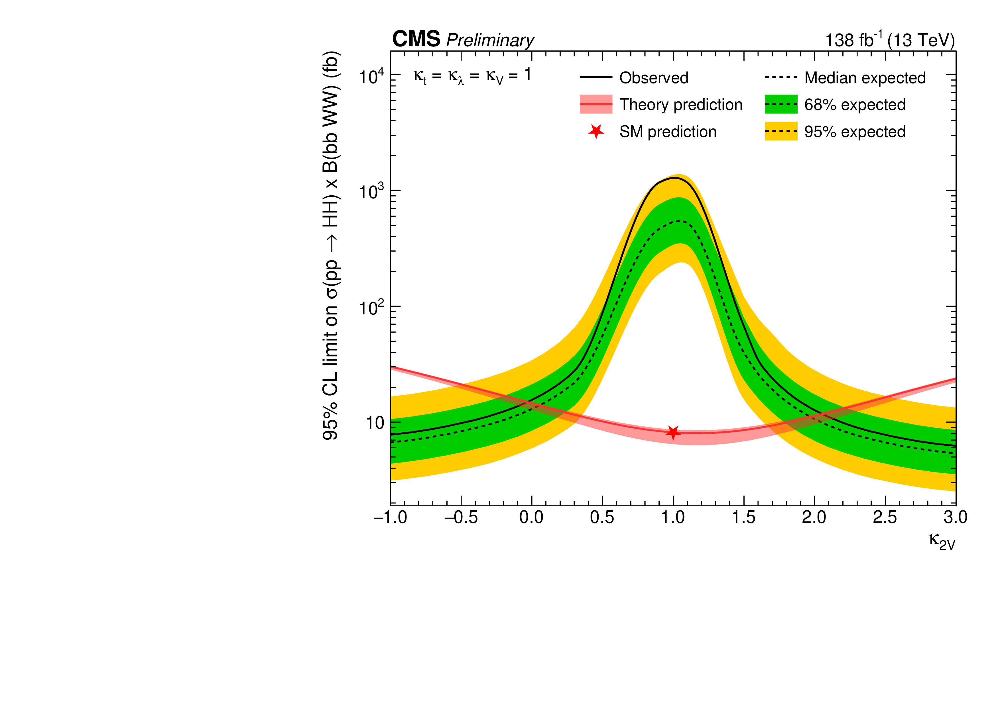

A binned maximum likelihood-fit is performed simultaneously in the ggF, VBF, and fail
regions, and the post-fit distributions are shown in Figure 14.4, with QCD in the signal regions
predicted using the data-driven estimate described in Section 14.4. Upper limits on the
production cross section
and constraints on the
coupling at a 95% CL are derived based on the asymptotic
formulae for the profile likelihood ratio test statistic and the
criterion, as
described in Chapter 8 and are shown in Figures 14.5 and 14.6, respectively. The upper limits on the
SM production cross
section and for
are observed (expected) to be 142 (69) and 1.1 (0.9) relative
to the theoretical predictions, respectively. The coupling modifier
is observed (expected)
to be constrained within
() at 95%
CL, which represents the second-strongest constraint by CMS to date, behind only the
boosted
analysis.
Figure 14.4. Post-background-only-fit distributions of the
-candidate
jet regressed mass ()
in the ggF (left) and VBF (right) signal regions. The data is not shown in the
Higgs mass window.
Figure 14.5. Observed and expected exclusion limits at 95% CL for the
signal SM cross section (top) and cross section at
(bottom).

Figure 14.6. 1D upper limits scans on the
inclusive HH cross section as a function of
.
14.6.2 Resonant
search
Similarly, a binned maximum likelihood fit is performed to the observed
distributions for a wide range of potential X and Y mass points simultaneously
in the fail and pass regions for the resonant analysis. The data and post-fit
estimates for the backgrounds are shown in Figure 14.7, with the data not shown
in the pass region as the analysis is currently blinded. Upper limits on the
production cross section, assuming a 100% branching fraction for the
decay,
are shown in Figures 14.9.
Figure 14.7. Post-background-only-fit distributions in the fully-merged category
of the -candidate
jet regressed mass ()
in the validation fail (bottom left), and validation pass (bottom right) regions, as
well as distributions in the pass region after applying the post-fit transfer factor
from the validation regions (top right), and the fail region (top left). The data is
not shown in the pass region.
Figure 14.8. Post-background-only-fit distributions
in the fully-merged category of the dijet mass
()
in the validation fail (bottom left), and validation pass (bottom right) regions, as
well as distributions in the pass region after applying the post-fit transfer factor
from the validation regions (top right), and the fail region (top left). The data is
not shown in the pass region.
Figure 14.9. Median expected exclusion limits in the fully-merged category for
resonant
signals for different
and .